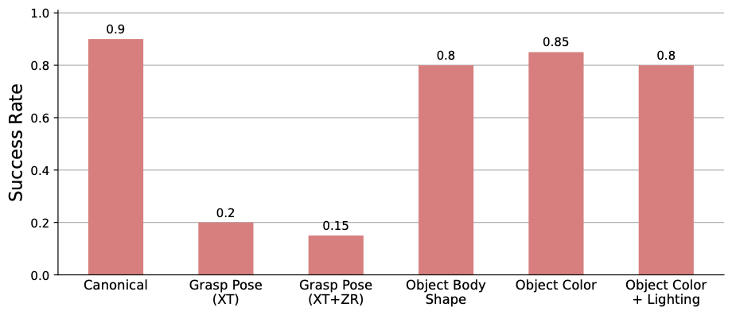

This paper primarily focuses on learning robust visual-force policies in the context of high-precision object assembly tasks. Specifically, we focus on the contact phase of the assembly task where both objects (peg and hole) have made contact and the objective lies in maneuvering the objects to complete the assembly. Moreover, we aim to learn contact-rich manipulation policies with multisensory inputs on limited expert data by expanding human demonstrations via online data augmentation.
We develop a simulation environment with a dual-arm robot manipulator to evaluate the effect of augmented expert demonstration data. Our focus is on evaluating the robustness of our model with respect to certain task variations: grasp pose, peg/hole shape object body shape, scene appearance, camera pose, and force-torque/proprioception noise. We show that our proposed data augmentation method helps in learning a multisensory manipulation policy that is robust to unseen instances of these variations, particularly physical variations such as grasp pose. Additionally, our ablative studies show the significant contribution of force-torque data to the robustness of our model.
For additional qualitative results and ablation studies, refer to the supplementary material on this webpage!
Our behavior cloning framework implementation is based off of Robomimic. To encode our observations, we draw upon the success of visuotactile transformer encoders and utilize a similar attention-based mechanism for RGB and tactile modality fusion. Rather than performing self-attention directly with the input tokens, we found that introducing a cross-attention step similar to the PerceiverIO architecture seemed to work best for our task. We tokenize our inputs by computing linear projections of both visual patches (as in vision transformers) for RGB inputs and individual readings per timestep for the force-torque input, and then add modality-specific position encodings. We then cross-attend these input tokens with a set of 8 learned latent vectors that then travel through a series of self-attention layers before ultimately being compressed and projected (as in VTT) to an output latent embedding. We encode proprioception with a multilayer perceptron to get an output embedding and concatenate both output embeddings to get the input to the policy network. The policy network is then a multilayer perceptron that outputs 3-dimensional delta actions.
To gain further insight into the information being learned by our model, we visualize the attention weights in the latent vector cross-attention step of the transformer visuotactile encoder. For each modality, we plot attention weights as proportions of total attention to tokens in that specific modality averaged over the 8 learned latent vectors. These weights are visualized as heatmaps overlayed on left and right wristview images for visual attention, and bars for each timestep under the force reading for tactile attention. We also plot the proportion of total attention for each modality (visual and tactile) during the course of a rollout.
NOTE: 5 rollouts per video (50 rollouts for experiment results).
Takeaways: Despite our model taking in twice as many visual tokens (72 tokens, 36 per view) as tactile ones (32 tokens), we observe that tactile attention takes up almost the entire proportion of attention across the input (as seen in the right-most plot of the videos). This finding provides further evidence to the importance of tactile information over visual information as discussed in our paper, where we found that removing visual information from our input had little impact on the robustness of our model. Furthermore, we observe that the visual attention is mostly focused on semantically insignficant parts of the scene, such as the gripper at the bottom of the view, suggesting that the model is not receiving much useful visual information.
In an effort to evaluate the validity of the online augmentation method for increasing the robustness of our model, we construct a dataset of human-generated trajectories with an extended set of visual variations and sensor noise, attempting to emulate a baseline data augmentation method that applies augmentations independently to each sensory modality offline during training. More specifically, we generate a dataset with training set variations of Scene Appearance (including object color, floor texture, and lighting), Camera Pose, and Sensor Noise with 12 augmentations per demonstration, but rather than keep applied variations consistent through each augmented rollout, we apply new instances of Scene Appearance and Camera Pose variations in each step of the demonstration. We also multiply the force and torque history reading by a random constant (from 0.1 to 2.0) independently determined each frame, following a similar data augmentation strategy used in InsertionNet. We denote this dataset as Expanded Visual+Noise.
Visualization of augmented observations collected for the Expanded Visual+Noise Dataset
Takeaways: We observe that our dataset with an expanded set of augmentations independently applied to each sensory modality does not necessarily improve robustness on most task variations (save for Peg/Hole Shape) compared to the original Visual+Sensor Noise dataset that was less extensive in terms of data augmentation. Most crucially, we do not see a significant improvement on Grasp Pose variations, validating the effect of non-independent multisensory data augmentation via trajectory replay. Thus, we have shown that even extensive independent augmentation of our multisensory input may not be enough to deal with certain task variations involved in our contact-rich task.
Our real-world task setup is built to mirror our simulation setup as closely as possible. We designate one arm to be compliant, applying a constant amount of force while the other arm moves according to the actions given to it by the policy. In contrast to policies trained in simulation, our real-world policies predict 2-dimensional delta actions in the axes perpendicular to the axis of insertion (rather than 3-dimensional actions that include the axis along the direction of insertion), in order to prevent potentially unsafe interactions that may occur as a result of a premature insertion attempt. Once the peg and hole are aligned, the compliant arm automatically moves its held object forward to complete the insertion. We train our real-world models with the same hyperparameters as those in simulation, although we only initiate 1 training seed per model (rather than 6). Additionally, we evaluate each model at the end of the entire training process, rather than performing training set rollouts during the training process to determine the best checkpoint. Successes and failures follow the same general criteria as in simulation, though a human manually annotates successes and failures per trial.
 As a real-world analog to our simulation experiment aimed towards determining the difficulty of generalization for each of our task variations, we evaluate a real-world policy trained on a dataset of human-generated demonstrations with no applied task variations on real-world versions of a subset of our task variations. Reported success rates over 20 rollouts can be found in the accompanying figure:
Takeaways: Like in simulation, we observe that Grasp Pose variations seem to be the most difficult to generalize to, while the model is able to handle the mostly unisensory perturbations of Object Body Shape and Scene Appearance. We also notice that our model struggles with Grasp Pose even when rotational grasp variations are removed; we hypothesize that this may be because a translational offset disrupts the desired behavior of lining up end-effector positions (given from proprioceptive input) in order to line up the peg and hole (i.e. solving the task can no longer be done by just matching the end-effector positions of the two arms). Including Grasp Pose variations into the training dataset (as was done in simulation through online augmentation) may also improve performance in the real world.
NOTE: 5 rollouts per video (20 rollouts for experiment results).